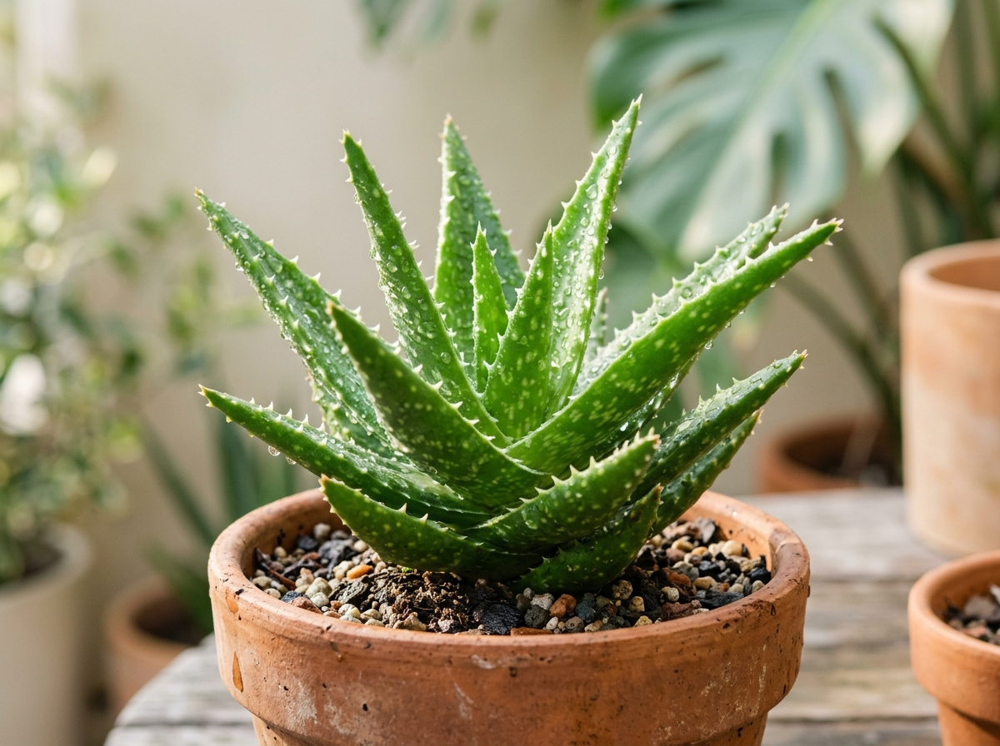
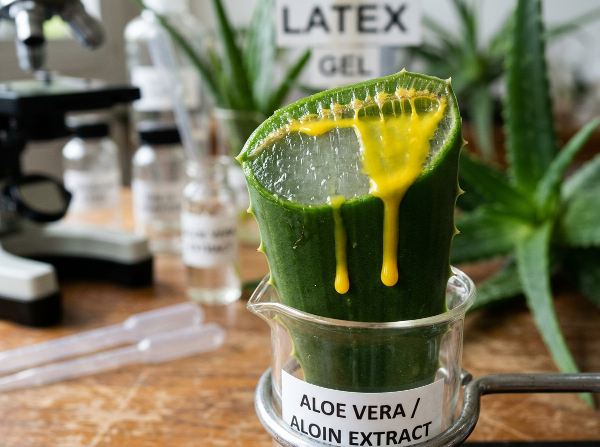
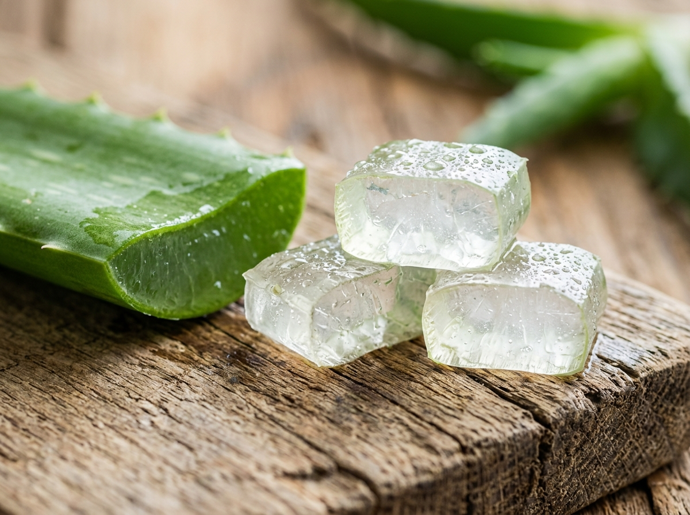
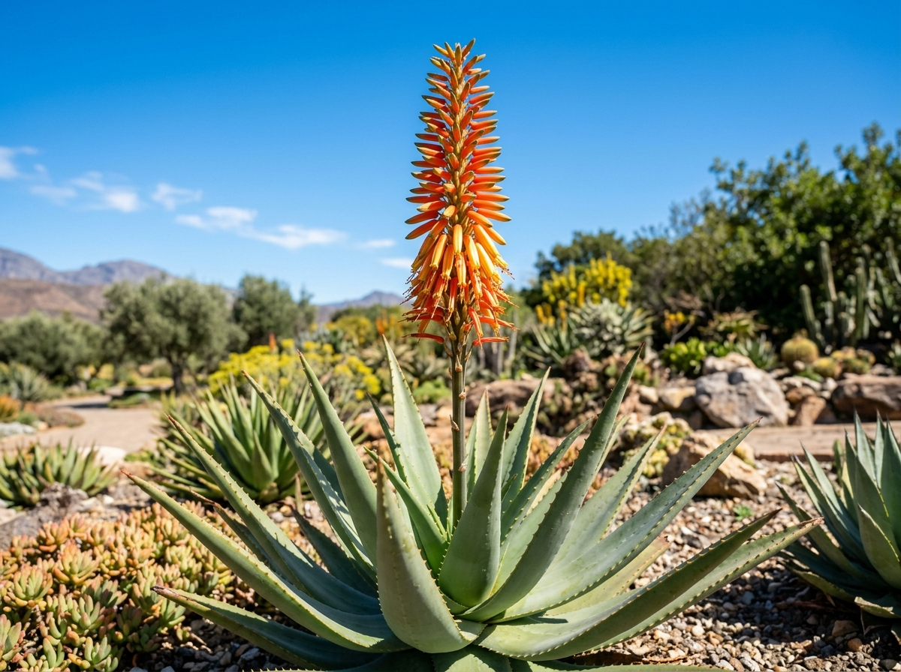
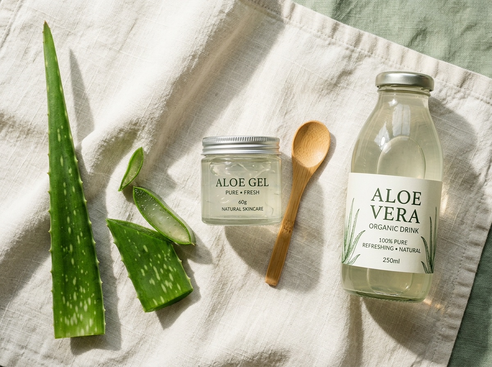
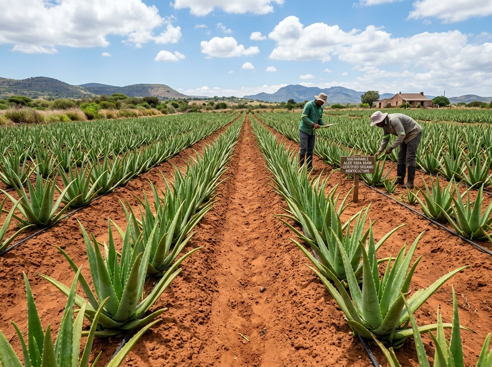
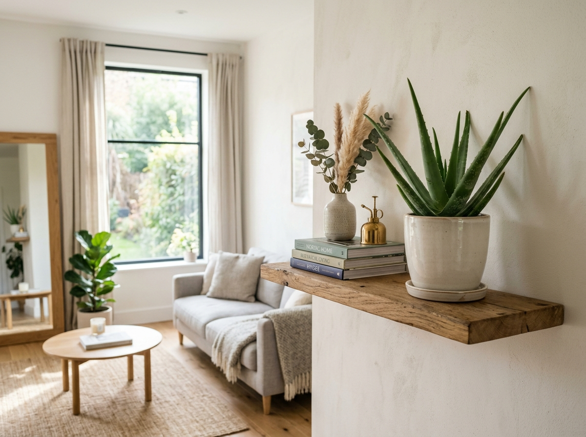

Lidah Buaya
Tanaman Sederhana dengan Beragam Potensi
Kenali Aloe vera lebih dekat, mulai dari sejarah, karakteristik, kandungan, manfaat, cara budidaya, hingga berbagai fakta menariknya.

Mengenal Aloe vera
Pahami hakikat botanis, asal-usul sebaran geografis, dan adaptasi istimewa tanaman sukulen yang telah mendampingi peradaban manusia selama ribuan tahun.
Lidah buaya (secara ilmiah dikenal sebagai Aloe vera) adalah tumbuhan berbunga tahunan dari kelompok tanaman sukulen. Tumbuhan ini memiliki karakteristik khas berupa daun berdaging tebal yang berfungsi sebagai tempat penampung air alami, memungkinkannya bertahan hidup di lingkungan kering dengan curah hujan rendah.
Habitat aslinya diperkirakan berasal dari wilayah beriklim panas dan kering di Semenanjung Arab bagian selatan. Melalui perdagangan maritim kuno dan eksplorasi bangsa-bangsa dunia, tanaman ini kini telah dinaturalisasi dan dibudidayakan secara luas di wilayah tropis, subtropis, dan mediterania di seluruh benua.
Di dalam helaian daunnya terdapat jaringan lunak transparan yang dikenal luas sebagai gel lidah buaya. Struktur gel ini tersusun terutama atas molekul air yang terikat dalam matriks rantai polisakarida. Selama berabad-abad, gel maupun getah daunnya dimanfaatkan untuk berbagai kebutuhan tradisional, perawatan tubuh, kosmetik, hingga produk pangan olahan.
Sejarah & Pemanfaatan Lintas Peradaban
Jejak dokumentasi arkeologis dan naskah kuno yang membuktikan bagaimana lidah buaya telah dimanfaatkan oleh tabib dan peradaban besar sejak ribuan tahun silam.
Tablet Tanah Liat Sumeria
Dokumentasi tertulis tertua mengenai tanaman dari genus Aloe ditemukan pada serangkaian lempeng tanah liat di kota kuno Nippur (wilayah Irak modern), mencatat penggunaannya sebagai ramuan pembersih raga.
Papirus Ebers & Ratu Mesir
Naskah medis Papirus Ebers mencatat lidah buaya sebagai tanaman obat untuk perawatan kulit dan luka bakar. Bangsa Mesir menjulukinya "tanaman keabadian", dan konon digunakan dalam ritual kecantikan Ratu Nefertiti dan Cleopatra.
Aristoteles & Aleksander Agung
Filsuf Aristoteles membujuk Aleksander Agung untuk menaklukkan Pulau Sokotra di Samudra Hindia demi mengamankan pasokan tanaman Aloe guna merawat luka prajurit tempur di medan perang.
De Materia Medica oleh Dioscorides
Ahli farmakopeia militer Romawi, Pedanius Dioscorides, menyusun deskripsi komprehensif pertama tentang penggunaan getah lidah buaya untuk iritasi kulit, radang gusi, serta khasiat pencaharnya.
Penyebaran ke Asia & Benua Baru
Melalui rute perdagangan Jalur Sutra, lidah buaya diperkenalkan ke Tiongkok (dikenal sebagai Lú Huì) dan India (dalam sistem Ayurveda). Misionaris Spanyol kemudian membawanya menyeberangi Samudra Atlantik ke Hindia Barat dan benua Amerika.
Industrialisasi & Standardisasi Ilmiah
Penemuan teknik stabilisasi gel murni pada pertengahan abad ke-20 melahirkan industri kosmetik modern bernilai miliaran dolar. Terbentuk lembaga riset seperti International Aloe Science Council (IASC) untuk menetapkan standar mutu dan kemurnian produk dunia.
Klasifikasi Ilmiah
Kedudukan taksonomis tanaman Aloe vera berdasarkan konsensus botani internasional Angiosperm Phylogeny Group (APG IV).
| Tingkat Taksonomi | Nama Ilmiah / Takson |
|---|---|
| Kingdom | Plantae (Tumbuhan) |
| Klad | Tracheophytes (Tumbuhan berpembuluh) |
| Klad | Angiosperms (Tumbuhan berbunga) |
| Klad | Monocots (Tumbuhan berkeping satu) |
| Ordo | Asparagales |
| Famili | Asphodelaceae |
| Subfamili | Asphodeloideae |
| Genus | Aloe L. |
| Spesies | Aloe vera (L.) Burm.f. |
Morfologi & Bagian Tanaman
Pelajari setiap organ anatomi Aloe vera, mulai dari sistem perakaran serabut hingga bunga tabung yang menjulang.
Akar (Radix)
Sistem perakaran serabut (fibrous root) yang menyebar dangkal secara mendatar di dekat permukaan tanah. Bentuk dangkal ini merupakan adaptasi cerdas untuk menyerap tetesan embun dan air hujan seketika sebelum air menguap.
- Perakaran serabut dangkal (kedalaman 15–30 cm).
- Sangat sensitif terhadap kondisi tanah yang becek/tergenang.
Batang (Caulis)
Memiliki batang sangat pendek (disebut acaulescent atau subacaulescent) dengan panjang hanya sekitar 10–30 cm. Batang diselimuti rapat oleh pelepah pangkal daun, dan lambat laun mengeras berkayu seiring usia tanaman.
- Hampir tak terlihat pada tanaman muda karena tertutup roset.
- Tempat tumbuhnya tunas anakan samping (pups).
Daun (Folium)
Organ utama yang berdaging sangat tebal (sukulen), tersusun melingkar padat (roset). Helaian daun berbentuk lanset dengan pangkal lebar dan ujung meruncing, berwarna hijau keabu-abuan dengan lapisan lilin alami.
- Tepi daun dilengkapi duri-duri kecil yang lentur.
- Mampu menyimpan air hingga 98–99% dari bobotnya.
Gel Bening (Parenkim Air)
Jaringan lunak menyerupai agar-agar transparan di pusat daun, tersusun dari sel parenkim berdinding tipis. Mengandung cadangan air tinggi, polisakarida acemannan, vitamin terlarut, mineral, dan asam amino.
- Transparan, tidak berbau tajam, dan tidak berasa pahit.
- Komponen utama untuk perawatan kulit dan pangan.
Lateks Kuning (Eksudat)
Cairan getah pekat berwarna kuning kehijauan yang mengalir dari sel-sel perisikel tepat di bawah kulit daun saat dipotong. Mengandung senyawa antrakuinon seperti aloin dengan rasa sangat pahit.
- Memiliki sifat laksatif (pencahar) yang sangat kuat.
- Berbeda total dari gel dan harus dibersihkan jika ingin dikonsumsi.
Bunga (Flos)
Muncul dari tangkai bunga tegak silindris (infloresens bulir/rasemos) yang menjulang setinggi 60–90 cm. Bunga berbentuk tabung menggantung dengan variasi warna kuning cerah hingga jingga kemerahan.
- Mekar saat tanaman cukup umur dan mendapat sinar matahari penuh.
- Kaya nektar yang menarik serangga penyerbuk dan burung madu.
Struktur Irisan Melintang Daun
Klik tiap lapisan di bawah ini untuk melihat struktur anatomi mikroskopis dan perbedaan fungsi antara jaringan pelindung, jalur getah lateks, dan inti gel bening.

Lapisan terluar dengan kutikula tebal berlilin untuk menahan penguapan air secara drastis.
Saluran mikroskopis tepat di bawah kulit penghasil getah kuning berasa pahit pekat.
Jaringan gelatin bening murni kaya rantai polisakarida dan nutrisi penenang kulit.
1. Kulit Luar (Kutikula & Epidermis)
Lapisan pelindung keras dan tebal dengan ketebalan sekitar 15–18 lapis sel. Dilapisi kutikula berlilin tebal yang meminimalkan penguapan air saat cuaca panas terik. Berfungsi mensintesis karbohidrat melalui kloroplas dan memberikan struktur mekanik kaku pada daun.
Perhatian Penting: Bedakan Gel dan Lateks!
Gel bagian dalam yang jernih dan bening sangat berbeda fungsinya dengan cairan lateks kuning (aloin) di bawah kulit. Lateks bersifat pencahar kuat dan dapat memicu iritasi usus bila tertelan dalam jumlah tertentu.
Kandungan Senyawa Aktif
Gel Aloe vera sebagian besar terdiri atas air murni dan mengandung spektrum komponen bioaktif yang bekerja secara sinergis dalam jumlah yang bervariasi secara alami.
Air Alami
Merupakan konstituen terbesar penyusun gel daun segar, berfungsi sebagai pelarut alami dan medium pembawa seluruh zat gizi tumbuhan.
Polisakarida Kompleks
Rantai karbohidrat panjang polimerik yang memberikan tekstur kenyal dan kental pada gel. Senyawa kuncinya adalah Acemannan dan Glukomanan.
Asam Amino
Mengandung ragam asam amino penyusun protein seluler, termasuk asam amino esensial dan non-esensial yang dibutuhkan dalam pemeliharaan jaringan.
Mineral Esensial
Mineral mikro dan makro anorganik yang terserap dari tanah, berperan penting sebagai kofaktor reaksi enzimatik alami tumbuhan.
Vitamin Alami
Kandungan antioksidan vitamin seperti Vitamin A (dalam bentuk beta-karoten), C, dan E, serta folat dan kolin dalam jumlah renik.
Enzim Fisiologis
Biokatalisator alami seperti bradikinase, amilase, lipase, dan katalase yang membantu proses perombakan gula dan lemak.
Senyawa Fenolik
Senyawa metabolit sekunder (golongan antrakuinon seperti aloin A dan B) yang terkonsentrasi di lapisan lateks luar sebagai perlindungan tanaman.
Komponen Bioaktif Lain
Fitosterol nabati (seperti beta-sitosterol, lupeol), senyawa saponin berbusa lembut, serta serat lignin yang membantu daya serap gel.
*Konsentrasi senyawa spesifik bervariasi bergantung pada varietas, umur panen, kondisi iklim, dan teknik pengolahan laboratorium.
Manfaat & Penggunaan
Eksplorasi ragam aplikasi gel Aloe vera di bidang perawatan kulit, kosmetika, rambut, produk pangan, serta tinjauan bukti ilmiah terkini.
Perawatan Kulit
Gel lidah buaya populer digunakan untuk menghidrasi kulit tanpa rasa lengket, memberikan sensasi dingin menenangkan pada kulit terpapar terik matahari, serta mendukung hidrasi pelindung kulit (skin barrier).
- Menenangkan kulit kemerahan ringan
- Memberikan hidrasi air instan
- Membantu menjaga elastisitas epidermis
Kosmetika & Pembersih
Bahan baku serbaguna dalam formulasi sabun pembersih lembut, lotion pelembap harian, toner penyegar, dan gel masker wajah karena kompatibilitasnya yang tinggi dengan beragam tipe kulit.
- Campuran dasar lotion tubuh & pelembap
- Bahan dasar gel penenang serbaguna
- Pelembap alami untuk bibir kering
Perawatan Rambut
Sejak lama digunakan secara tradisional untuk melembapkan kulit kepala kering, membantu melembutkan helai rambut kusam, serta diformulasikan ke dalam produk shampoo dan kondisioner.
- Menyejukkan kulit kepala yang gatal
- Membantu menghaluskan kutikula batang rambut
- Bahan alami masker rambut berkilau
Produk Pangan & Minuman
Daging gel bening yang telah dicuci bersih dan dihilangkan lateksnya diolah menjadi minuman penyegar nata de aloe, sari lidah buaya kemasan, jeli, dan manisan berserat tinggi.
- Potongan gel kenyal (nata de aloe)
- Minuman herba kemasan higienis
- Bahan permen jeli serat fungsional
Industri & Bioteknologi
Ekstrak gel terliofilisasi (serbuk beku-kering) digunakan dalam skala industri farmasi topikal, industri pelapis edible coating alami untuk memperpanjang kesegaran buah pascapanen.
- Bahan baku serbuk murni terstandar
- Pelapis biologis (edible coating) buah segar
- Formulasi produk perawatan hewan peliharaan
Tanaman Hias & Lanskap
Bentuk roset geometrisnya yang anggun dan kemampuannya bertahan dalam ruangan menjadikannya tanaman pot favorit untuk dekorasi interior, taman bebatuan (rock garden), dan teras hemat air.
- Estetika minimalis botanik modern
- Perawatan rendah untuk pemula
- Toleran lingkungan kering dalam ruangan
Apa yang Sudah Diteliti oleh Sains?
Sebagai platform edukasi yang bertanggung jawab, kami membedakan secara tegas antara bukti penelitian yang kokoh dengan klaim tradisional atau promosi berlebihan.
Hidrasi Kulit & Luka Ringan
Riset klinis dermatologi mendukung efektivitas gel murni dalam mempercepat penyembuhan luka bakar derajat pertama-kedua, menjaga kelembapan stratum korneum, dan menenangkan eritema akibat radiasi UV.
Penggunaan Kosmetika Topikal
Formulasi gel dan krim dengan ekstrak lidah buaya terbukti aman dan bermanfaat memberikan efek emolien, menenangkan kulit sensitif, dan menjaga kelembutan rambut tanpa efek samping pada sebagian besar individu.
Klaim Penyakit Dalam Kronis
Penelitian awal pada hewan dan uji klinis skala kecil meneliti potensi pengaruhnya terhadap kadar glukosa darah atau profil lipid, namun belum cukup bukti konklusif untuk menjadikannya pengganti terapi obat medis standar.
Lidah Buaya dalam Keseharian
Berbagai wujud pemanfaatan Aloe vera yang mudah kita jumpai di toko, apotek, pasar, maupun pekarangan rumah.
Gel Aloe Soothing
Gel serbaguna dalam jar untuk melembapkan kulit kering dan menenangkan sengatan matahari.
Minuman Segar Aloe
Minuman kemasan rasa buah dengan potongan daging lidah buaya yang kenyal dan menyegarkan.
Masker Lembar (Sheet Mask)
Masker wajah siap pakai yang diresapi esens lidah buaya untuk hidrasi mendalam dalam 15 menit.
Lotion Pelembap Tubuh
Krim pelembap harian bertekstur ringan yang cepat menyerap untuk menjaga kelembutan kulit.
Shampoo & Hair Conditioner
Formula pembersih dan perawatan helai rambut agar tampak berkilau, lembut, dan sehat.
Sabun Mandi Alami
Sabun batang atau cair herbal berbasis minyak kelapa dan lidah buaya tanpa deterjen keras.
Kosmetik & Lip Balm
Pewarna bibir, pelembap bibir, dan alas bedak ringan dengan kandungan pelembap alami.
Tanaman Hias Pot Rumah
Tanaman hias penghias meja atau pekarangan rumah yang tangguh dan menyerap energi positif.
Bahan Pangan Berserat
Bahan campuran jeli, es buah, sup manis, atau manisan segar khas daerah Pontianak.
Panduan Menanam Langkah demi Langkah
Panduan praktis budidaya Aloe vera di rumah, mulai dari pemilihan anakan yang tepat hingga proses panen daun segar.
Memilih Bibit & Anakan (Pups)
Pilih tunas anakan samping yang tumbuh dari dasar tanaman induk dengan tinggi minimal 8–12 cm dan telah memiliki 3–4 helai daun serta perakaran mandiri. Pisahkan perlahan menggunakan pisau steril dekat pangkal batang.
Menyiapkan Media Tanam Porus
Gunakan media tanam dengan drainase cepat. Komposisi ideal adalah campuran tanah kebun, pasir malang kasar atau perlite, dan kompos matang dengan perbandingan 1:1:1. Hindari tanah lempung padat yang menahan genangan air.
Proses Penanaman ke Dalam Pot
Gunakan pot bertanah liat (terakota) yang memiliki lubang pembuangan air di dasarnya. Letakkan bibit tegak di bagian tengah, timbun akar dengan media tanam, dan pastikan pangkal daun tidak terkubur terlalu dalam agar tidak membusuk.
Aturan Penyiraman Sukulen
Gunakan prinsip "siram tuntas, biarkan mengering". Siram sampai air mengalir keluar dari lubang dasar pot, lalu jangan siram lagi hingga media tanah bagian atas (sedalam 3–5 cm) benar-benar kering (biasanya cukup 1–2 minggu sekali).
Kebutuhan Sinar Matahari
Tempatkan pot di tempat yang menerima sinar matahari terang tidak langsung atau sinar matahari pagi selama 4–6 jam sehari. Jika terpapar sinar matahari siang yang terlalu terik mendadak, daun dapat berubah warna menjadi kecokelatan.
Pemeliharaan Rutin
Lap permukaan daun sesekali dengan kain lembap lembut untuk membersihkan debu agar stomata daun tetap bernapas lancar. Berikan pupuk organik cair dosis rendah atau kompos matang setiap 2–3 bulan sekali di musim pertumbuhan.
Teknik Memanen Daun
Panen hanya daun paling luar (daun yang paling tua dan tebal). Iris secara rapi sedekat mungkin dengan pangkal batang menggunakan pisau tajam bersih. Hindari memotong daun muda yang berada di pusat tanaman.
Kondisi Tumbuh Ideal
Kombinasi faktor lingkungan mikro yang memastikan tanaman lidah buaya tumbuh subur, berdaun montok tebal, dan bebas dari penyakit busuk akar.
Intensitas Cahaya
Cahaya terang tersaring hingga sinar matahari langsung yang adaptif. Membutuhkan sekitar 5–6 jam cahaya terang harian.
Hindari: Ruang gelap tanpa ventilasiKebutuhan Air
Penyiraman teratur tetapi jarang. Lebih baik kurang air daripada kelebihan air karena sukulen tahan kekeringan.
Kunci: Siram hanya saat tanah keringKarakteristik Tanah
Media tanam berporositas tinggi dengan pH netral hingga sedikit basa (6.5–7.5). Kaya pasir dan kerikil halus.
Media kaktus & sukulen komersialSpesifikasi Pot
Pot berbahan terakota tanah liat berpori lebih direkomendasikan daripada pot plastik kedap, wajib memiliki lubang drainase bawah.
Wajib: Lubang drainase lancarSuhu Lingkungan
Rentang suhu optimal berada di antara 20°C hingga 35°C. Sangat cocok dengan iklim tropis Indonesia sepanjang tahun.
Suhu ideal: 22°C – 32°CKelembapan Udara
Lebih menyukai kelembapan udara sedang hingga rendah (40–60%). Sirkulasi udara yang lancar sangat penting mencegah jamur.
Pastikan ada sirkulasi udara baikMasalah yang Sering Terjadi
Pelajari gejala perubahan visual pada daun dan sistem perakaran lidah buaya, kemungkinan penyebab biologisnya, serta langkah perbaikan yang tepat.
Daun Menguning dan Lembek
Solusi: Hentikan penyiraman segera. Angkat tanaman dari pot untuk memeriksa akar, buang akar yang busuk, dan ganti media tanam dengan campuran yang lebih berpasir dan kering.
Akar Membusuk dan Berbau
Solusi: Potong seluruh bagian akar yang berwarna cokelat kehitaman dan lembek menggunakan gunting steril. Angin-anginkan selama 1 hari hingga luka mengering (callus), lalu tanam ulang di pot berlubang baru.
Daun Menjadi Tipis dan Mengkerut
Solusi: Berikan penyiraman tuntas hingga air menetes dari dasar pot. Daun sukulen biasanya akan menyerap air dan kembali montok dalam beberapa hari.
Daun Berubah Kecokelatan atau Kemerahan
Solusi: Pindahkan pot ke lokasi yang lebih teduh dengan cahaya terang tersaring. Warna hijau segar akan berangsur pulih dalam 1–2 minggu.
Hama Kutu Putih (Mealybugs)
Solusi: Bersihkan koloni kutu putih menggunakan kapas bertangkai (cotton bud) yang dibasahi alkohol 70%, atau semprotkan larutan sabun kalium insektisida alami.
Tanaman Menjadi Pucat dan Menjulur (Etiolasi)
Solusi: Pindahkan tanaman secara bertahap ke tempat yang lebih dekat dengan jendela atau area luar ruangan beratap transparan.
Cara Mengolah Daun Lidah Buaya
Panduan higienis dan aman untuk memisahkan gel bening dari getah kuning lateks beraroma tajam sebelum dimanfaatkan.
Pilih Daun yang Sehat
Pilih daun paling luar yang tebal, gemuk, segar, dan tidak memiliki bercak penyakit atau pembusukan.
Cuci Daun Bersih
Bilas seluruh permukaan helaian daun di bawah kucuran air mengalir untuk menghilangkan debu dan kotoran tanah.
Potong Pangkal Daun
Potong sedikit bagian pangkal putih daun menggunakan pisau bersih untuk membuka jalur saluran getah lateks.
Tiriskan Getah Kuning
Berdirikan daun secara tegak di dalam wadah selama 15–30 menit agar cairan lateks aloin kuning mengalir tuntas ke dasar.
Kupas Kulit Luar Hijau
Iris duri pada kedua tepi samping daun, lalu kupas lapisan kulit hijau tipis menggunakan pisau tajam secara mendatar.
Ambil Gel Transparan
Gunakan sendok bersih atau pisau tumpul untuk mengeruk daging gel jernih agar terlepas dari sisa kulit bawah.
Bilas Gel dengan Benar
Cuci potongan gel dengan air bersih beberapa kali hingga sisa lendir berlebih dan getah kekuningan hilang sempurna.
Simpan atau Gunakan
Gunakan gel langsung untuk masker kulit, atau simpan dalam wadah kedap kaca di dalam lemari pendingin (maksimal 5–7 hari).
Peringatan Pengolahan Konsumsi:
Jika gel lidah buaya ditujukan untuk dikonsumsi (minuman atau makanan olahan), pembuangan getah kuning lateks (aloin) dan perebusan sebentar dengan air garam sangat dianjurkan untuk menonaktifkan senyawa pencahar alami dan menghilangkan rasa getir.
Keamanan & Peringatan Penggunaan
Meskipun berbahan alami, penggunaan tanaman obat tetap memiliki batasan farmakologis yang harus dipahami demi keselamatan diri.
Uji Alergi Kulit (Patch Test)
Penggunaan topikal segar dapat menimbulkan reaksi iritasi atau dermatitis kontak pada orang dengan kulit hipersensitif. Oleskan sedikit gel pada lipatan siku dalam selama 24 jam sebelum pemakaian luas.
Bahaya Menelan Lateks Kuning
Lateks daun kaya senyawa aloin yang bersifat pencahar stimulan kuat. Konsumsi oral lateks yang tidak terkontrol dapat memicu kram perut hebat, diare berlebih, dan gangguan keseimbangan elektrolit tubuh.
Kelompok Rentan & Interaksi Obat
Ibu hamil dan menyusui dilarang keras mengonsumsi produk lateks aloe karena dapat merangsang kontraksi rahim. Pasien diabetes atau pengguna obat jantung/diuretik wajib berkonsultasi dengan dokter.
Fakta Menarik Lidah Buaya
Kumpulan fakta unik dan keistimewaan biologis Aloe vera yang jarang diketahui publik.
Bernapas di Malam Hari (CAM)
Untuk menghemat air, stomata daun lidah buaya hanya terbuka di malam hari saat suhu dingin untuk menyerap karbon dioksida melalui jalur fotosintesis Crassulacean Acid Metabolism.
Keluarga Besar 500+ Spesies
Genus Aloe mencakup lebih dari 500 spesies di dunia, mulai dari miniatur sukulen mungil beberapa sentimeter hingga pohon raksasa Aloidendron barberae setinggi 18 meter.
Bertahan Tanpa Hujan Berbulan-bulan
Dengan cadangan air yang terikat rapat dalam polimer gel dan lapisan kutikula lilinnya, tanaman ini mampu tetap segar walau tidak menerima air hujan selama berbulan-bulan.
Kerap Disalahpahami sebagai Kaktus
Meskipun sama-sama sukulen berduri pelindung, lidah buaya secara botani sama sekali bukan kaktus. Lidah buaya berfamili Asphodelaceae, sedangkan kaktus sejati adalah famili Cactaceae.
Bunga Sahabat Burung Madu
Bunga tabung berwarna jingga-kuning pada tanaman lidah buaya memproduksi nektar manis berlimpah yang menjadi sumber energi favorit bagi burung madu dan lebah liar di alam.
Penyembuhan Diri Otomatis
Bila helaian daun lidah buaya tergores atau terpotong sebagian di alam terbuka, getahnya akan segera membentuk lapisan pelindung karet tipis dalam hitungan jam untuk mencegah infeksi.
Mitos vs Fakta Ilmiah
Mari meluruskan berbagai mitos populer di masyarakat seputar lidah buaya dengan kacamata botani dan farmakologi modern.
Perbandingan Gel Bening vs Lateks Kuning
Tabel perbandingan komprehensif untuk memahami perbedaan fisik, fisiologis, dan aplikasi keselamatan kedua substansi daun.
| Parameter | Gel Bagian Dalam (Parenkim) | Lateks Daun (Eksudat Aloin) |
|---|---|---|
| Warna & Tampilan | Bening, jernih, transparan menyerupai jeli | Kuning kecokelatan kental, keruh |
| Lokasi Anatomi Daun | Inti tengah daun (jaringan parenkim air) | Tepat di bawah kulit luar (sel-sel perisikel) |
| Rasa & Aroma | Hambar, netral, menyegarkan | Sangat pahit pekat dan berbau khas tajam |
| Senyawa Utama | Air (~98.5%), Polisakarida Acemannan, Asam Amino | Antrakuinon hidroksi (Aloin A dan Aloin B) |
| Penggunaan Utama | Hidrasi kulit, pelembap, formulasi pangan aman | Bahan obat pencahar masa lampau dengan kontrol ketat |
| Status Keamanan | Aman untuk aplikasi topikal dan konsumsi olahan bersih | Berisiko iritasi mukosa usus bila dikonsumsi tanpa panduan |
Galeri Fotografi Botani
Koleksi potret berkualitas tinggi tanaman Aloe vera dari berbagai sudut pandang botani, budidaya perkebunan, hingga produk olahan.
Tanaman Aloe vera Berembun Pagi

Kubus Kristal Gel Daging Daun

Bulir Bunga Jingga-Kuning Mekar

Formulasi Kosmetik & Sari Alami

Perkebunan Budidaya Berkelanjutan

Tanaman Hias Interior Rumah Minimalis
Ekstraksi & Penirisan Getah Lateks Kuning
Pertanyaan yang Sering Diajukan (FAQ)
Jawaban ringkas dan ilmiah atas pertanyaan umum seputar tanaman lidah buaya yang sering ditanyakan pelajar dan pecinta tanaman.
Seberapa Kenal Kamu dengan Aloe Vera?
Uji pemahamanmu tentang morfologi, taksonomi, dan cara merawat lidah buaya melalui kuis interaktif berikut!
Memuat pertanyaan...
Selesai Mengerjakan Kuis!
Hasil kuis kamu sangat memuaskan! Kamu memiliki pemahaman botani yang sangat baik.
Sumber & Referensi Ilmiah
Seluruh sajian informasi, anatomi, dan fitokimia pada website ini dikurasi berdasarkan sumber akademik dan literatur botani terpercaya.